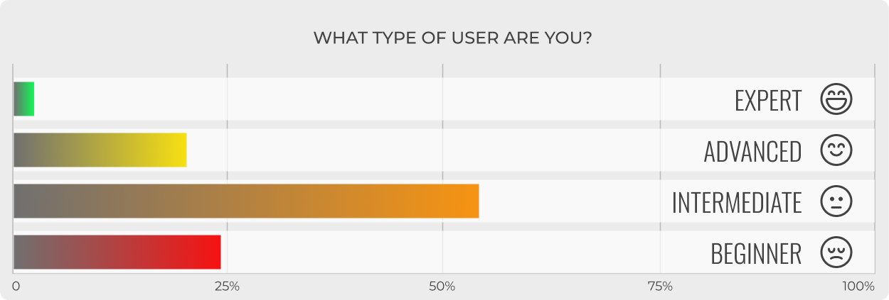
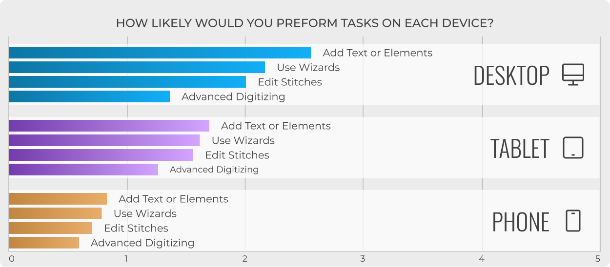
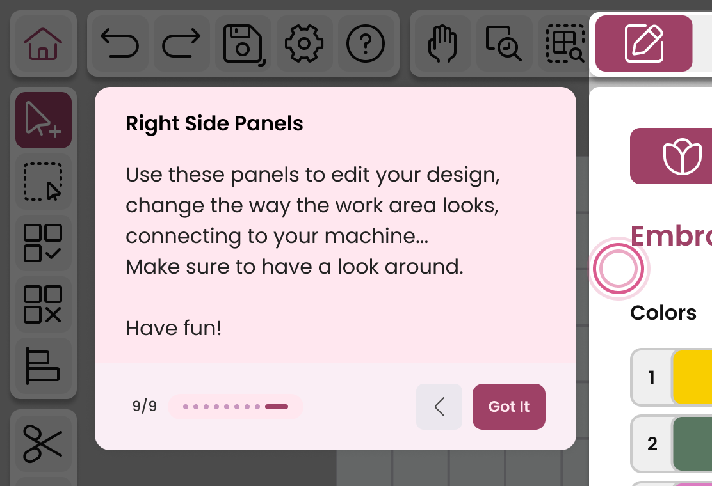
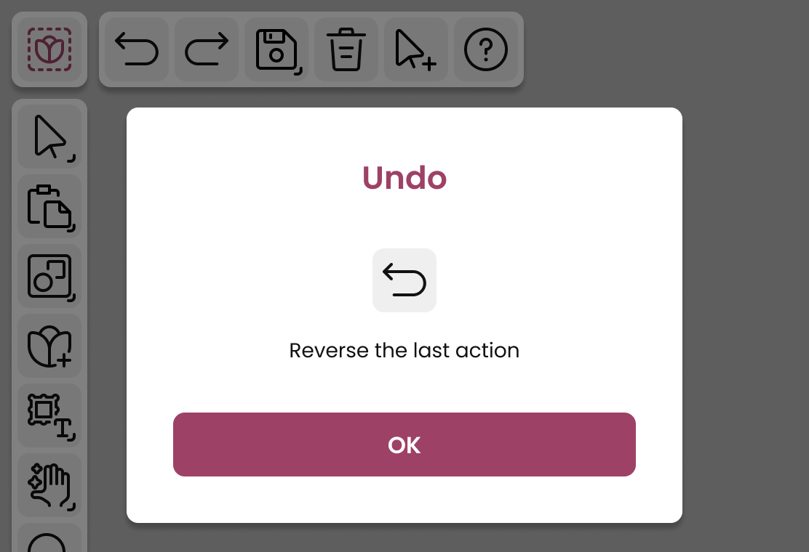

SVP Worldwide is a leading manufacturer of high-end domestic sewing and embroidery machines (brands include Singer, Husqvarna Viking and Pfaff). These machines have an associated ecosystem of creative digital tools, known as CREATIVATE.
As part of the team who developed the original desktop embroidery software and as an expert in embroidery digitizing, I was assigned the task of designing a brand new tablet App experience.
| Type of Project | Embroidery App |
| Platforms | iOS,Android, Windows and macOS |
| Goal | Create a new Embroidery app experience inspired by the legacy software |
| My Role | Product Designer |
| Duration | 18 months |
| Team | Project Manager, Stakeholders, Development Team |
| Tools | Adobe XD, Figma, FigJam, Illustrator, Miro |
EMPATHIZE
The existing desktop legacy user base could be a great source of information to start from. I wanted to find out how the existing users were feeling about the desktop software.
I decided the first step was to write a survey and send it on the newsletter of the existing user base.
The main goal of the survey was to identify what features were used the most, the potential choice of devices to perform them and the user impression of his own skills.
The graphic below shows how low the users rate their skills.
The second graphic shows the device preference for each task proposed.
By analyzing the survey data, I was able to find the following problems:
- Steep learning curve: Users feel lost and struggle to find help.
- Feature overload: Most users only use 20% of features.
- Low self-confidence: Users feel “not skilled enough” despite years of experience.
- Perceived value gap: They feel they pay for features they don't use.
DEFINE
TARGET AUDIENCE
The Embroidery tablet app was meant to be a new experience catered to the existing user base but also oriented to a new younger audience, more tech-savvy.
Based on the information from the survey research and aligned with the new audience goals, I defined the following personas.
| Age | 62 · Austin, TX · Retired teacher |
| Profile | Loyal user of the desktop software. Loves spending time in her crafting room. |
| Goals | Continue creating designs easily; smooth transition to the new app |
| Frustrations | Intimidated by new tech. |
| Quote | “I just want the new app to feel familiar and easy to use.” |
| Age | 29 · Portland, OR · Freelance designer |
| Profile | Tech-savvy creative. New to embroidery but loves digital design tools.. |
| Goals | Create, edit, and share embroidery designs seamlessly on her tablet. |
| Frustrations | Old tools feel outdated; wants a modern UX. |
| Quote | “My embroidery tools should feel as fluid as my digital art apps.” |
IDEATION
A GLOBAL VIEW
Even though we are aiming for a starting MVP with limited functions, I tried to include all of the selected must-have features in the app, in order to have the global picture. It is desirable to perform an incremental development avoiding potential steps back in the future.
DESIGNING THE UI
As a starting point when thinking about the UI, I spent some time checking other apps. I could not find any other tablet app for embroidery, but I did check other creative tools such as Photoshop and Illustrator for iPad, Sketchbook, Nomad (3D models) and Procreate. I wanted to find the best practices on organizing the information, and any good solid standards that I could apply on my app.
Once I had enough research done, I used the "crazy 8's" brainstorming method; I came up with different ideas for the main UI, where the necessary elements were placed differently:
With the quick sketches done, I made wireframe versions of the three that I did find were better and made more sense for this type of project.
At this point I felt I had a winner, and was able to move into the prototyping phase, keeping always in mind the following requirements:
- The app is intended to be used by interacting with both hands.
- The app will be using both orientations, landscape and portrait.
- There will be light and dark themes available.
PROTOTYPING
COLORS
For the sake of simplifying the development, my goal was to create a color scheme that was looking good but had a very reduced amount of color variables, keeping always WCAG in mind.
I used a range of whites and light greys for the layout in light mode, giving just enough contrast to make panels and toolbars stand out. The dark mode version was using shades of dark gray, but never using 100% black.
It was really important the shade used for the accent color, because it was going to be the only element that made the whole UI pop. I decided to use a rose value that slightly changed between light and dark mode.
HOME PAGE
The home page was designed based on a file browser already existing in the CREATIVATE ecosystem. It is divided in:
Left panel:
- Some open options.
- Pre-existing embroidery related tools.
Middle Section:
- “Create New” button.
- Carousel with resources and marketing items.
- List of recently opened files.
Right side panel:
- Selected design preview and info.
- Some options for the file.
- Open CTA Button.
CANVAS PAGE
The canvas page is the main page where we edit and manage the embroideries:
1. Toolbars
- Corner "Home Button".
- Top toolbar with common actions.
- Left toolbar with embroidery tools.
2. Panel Selector
This panel will switch the four existing panels: Edit, Multiply, View and Output.
3. Panels
While the rest of panels are static, the edit panel will populate dynamically depending on the object type.
4. Filmstrip
The filmstrip shows the sequence of embroidery as they will be stiched in the machine. It is a kind of timeline.
HELP ELEMENTS
On the first session, or after an update including new features, a set of coach marks will guide the user.
By enabling the quick help button and tapping on a UI element, a pop-up will trigger showing the related info.
TESTING
Once I had ready a prototype, I was ready to get some testing done.
I gathered a focus group of people that had used our desktop embroidery software before. The tests were done remotely, and the tasks requested to perform were:
- Open one of the recent files.
- Delete an element of the design.
- Change the font type of a lettering object.
- Change the color for the lettering.
- Send the project to the machine.
THE OUTPUT PROBLEM
By running the tests I could see that almost every user managed to perform the tasks with very little help. But there was a particular step that was causing problems: sending the project to the machine. Some people had difficulties finding the Send Project button at the panel, and I thought it was probably caused by my design.
I decided to replace the initial output icon (circle with an arrow) with the symbol of an embroidery machine. The button to send to the machine should be inside a panel labeled with an embroidery machine.
I could see on later tests that this little tweak reduced the problem.
DOUBLE CLICKERS
There was a request from the user that I had several times and I did not anticipate. A lot of the users on the test tried to open a file by double-tapping on the design card (probably a behaviour typical of desktop users). Instead of using the "Open File" button available on the design info panel, their instinct was to double tap the design. They wanted to have that behaviour added.
I agreed with the project owner that this was a sensible request, and the change was implemented on the following iteration.
GOOD FEEDBACK
There was in general a good amount of positive feedback from the focus user group.
- Users found the home screen clear, simple, and not overcrowded.
- Icons were intuitive; navigation (opening modules and recent projects) was straightforward.
- Coachmarks: praised for being short, clear, and easy to follow.
CONCLUSIONS
RESULTS
After the MVP version of the app, the feedback and feeling around the app was very positive in general.
Most users described the app as simple, clear, and easy to navigate, with a well-balanced home screen and recognizable iconography.
Users appreciated the cohesive interaction and logical layout, allowing easy transition between desktop and tablet versions.
The coach marks effectively guided the users. They were well received and somehow filled the help gap mentioned in the survey.
The app's architecture and design system are prepared for adding future features and interactivity after the MVP.
With the development of the app we have a solid tablet UX/UI foundation to be reused in future apps.
LEARNINGS
This project for me came with a lot of responsibility. The app, as successor to the desktop legacy software, came with a lot of history and features behind it, and now it was up to me to decide what was going to make it to the app or not. I always felt I had to be careful about it in order to not disappoint the existing user base. The survey I ran at the beginning was extremely useful for this matter.
An additional challenge was to forget what I already knew about the desktop software in order to come up with new improved ways of doing each task. Old ways of doing things kept trying to sneak into the new tablet app.
At the stage when I was trying to reduce the clutter in general, I had to rely on icons without labels in order to save space and noise. I realised how the current line-type style of the icons makes it really difficult to express some ideas or features. This is the reason why the context help and coach marks are so important to answer the “what does this do?” question.